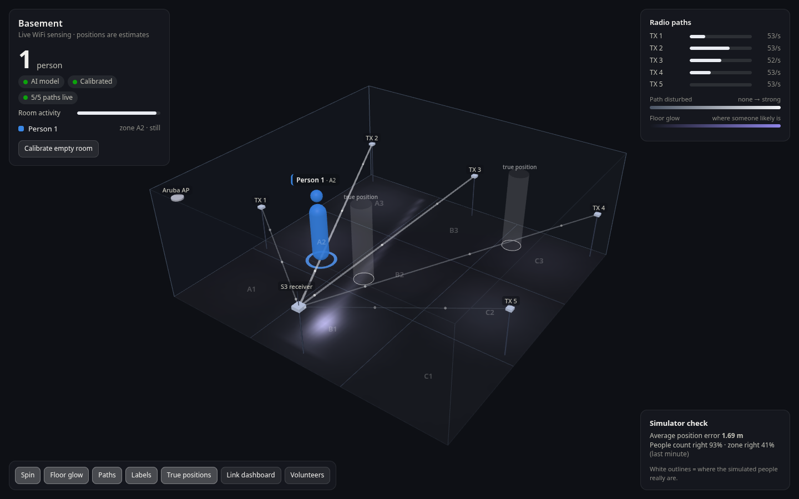
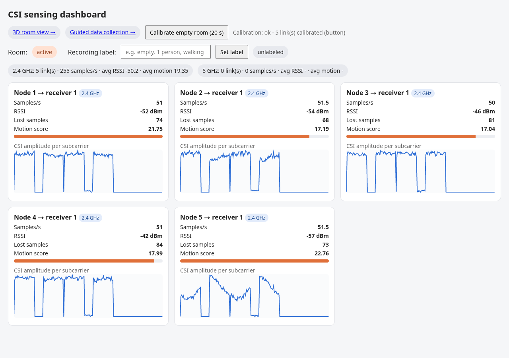
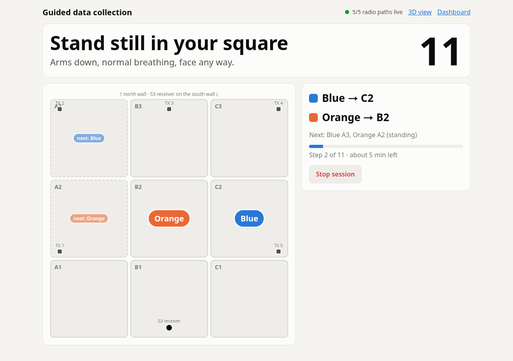

Seeing Through Wi-Fi
Clairvoyance finds people in a room using nothing but Wi-Fi: no cameras, no microphones, nothing worn.

Small ESP32 boards around the room send radio packets to a receiver. A person's body absorbs and reflects those signals, and the Wi-Fi chip measures the change as Channel State Information (CSI).
By watching which radio paths get disturbed, the system works out where each person is standing and shows them live in a 3D model of the room.
How It Works
- Transmit Boards around the walls broadcast a tiny ESP-NOW packet 50 times a second.
- Measure The receiver measures each packet's CSI, how strongly each of 52 frequencies arrived, and streams it to the server.
- Compare The server compares every path with the empty room and filters out interference that hits all paths at once.
- Locate It finds the floor spot that best explains which paths changed, or lets the trained AI model pick the zone and head count.
- Show The 3D view draws the room, the glowing radio paths, and each person, four times a second.

Teaching It the Room
Every room bends Wi-Fi differently, so the system learns each space.

- We taped a 3 × 3 grid on the floor.
- A guided page told volunteers out loud which square to stand or walk in, and labeled the recordings automatically.
- Those sessions trained random forest models (scikit-learn) that predict each person's zone and the head count.
- In our simulator benchmark, the model placed one person in the exact square about 80% of the time and never showed a person in an empty room, even with heavy interference.
Choosing the Right ESP32
My part of the project was the ESP32 side: picking the boards and antennas, getting the transmitters talking over ESP-NOW, and making sure CSI sensing worked on the receivers before the data reached the Pi.
Which board is best for CSI sensing
- ESP32-C5Best. Wi-Fi 6 on both 2.4 GHz and 5 GHz, so it can sense on the quieter 5 GHz band.
- ESP32-C6Best 2.4 GHz choice. Wi-Fi 6, but 2.4 GHz only.
- ESP32-S3 ≈ ESP32-C3About equal on CSI. We used an S3 receiver because the XIAO ESP32-S3 has an antenna connector for a dipole.
- ESP32Oldest and weakest at CSI, but a reliable transmitter.
Ranking from Espressif's ESP-CSI solution guide: ESP32-C5 > ESP32-C6 > ESP32-C3 ≈ ESP32-S3 > ESP32.
Transmitters vs. receivers
Only broadcast small ESP-NOW packets, so almost any ESP32 works. What matters most is a stable connection and a decent antenna, so every packet arrives on time.
Do the actual CSI sensing on every packet, so this is where the board ranking above matters. Use the best chip you can, with a dipole antenna.
Antenna types
Built into the board. Small and cheap, but the weakest of the three, and easily detuned by nearby wires, metal, or hands.
A roughly 31 mm wire soldered to the antenna feed. Cheap and a big step up from a tiny onboard antenna. Good for transmitters.
An external rod antenna on an antenna connector. Highest gain, even coverage all around, and least affected by interference. Best for CSI receivers.
These tiny boards squeeze a small ceramic antenna in right next to the crystal, the pin headers, and the power circuitry, with almost no clear space around it. In practice that means:
- Weak, unreliable Wi-Fi: they drop the connection or fail to connect, especially at full transmit power.
- Interference: nearby wires, headers, and power traces detune the antenna.
- Unstable power: the small regulator struggles with Wi-Fi's current spikes, which can cause disconnects and resets.
For CSI, where every lost packet hurts accuracy, use a board with a better antenna or an antenna connector instead.
Our Demo Setup
This simulation shows how the system should work in a real room.
- Up to 10 transmitters: each one sends its own Wi-Fi path across the room to the receiver.
- A person walks in: the paths they cross light up.
- Tracked by zone: they're followed around the room with no cameras, just Wi-Fi.
- A second person enters: both are tracked at once.
Demo & Disclaimer
What We Used
Six boards, mostly ESP32 dev modules and Seeed Studio XIAO ESP32-S3 boards. The XIAO transmitters used wire antennas.
An ESP32-S3 with a dipole antenna.
A Raspberry Pi 5 (8 GB) hosted the AI model and the demo script.
An industrial-grade enterprise access point hosted the Wi-Fi network on channel 11.
The map works with varying levels of success depending on the ESP32 board, Wi-Fi interference on the channel, and the number of transmitters.
- Transmitters: our demo used 6, but the system works with up to 10. The more transmitters, the more accurate the map.
- Best results: 5 GHz transmitters and receivers using ESP32-C5 boards.
- If you need 2.4 GHz: use ESP32-C6 transmitters (or transmitters with dipole or wire antennas) and an ESP32-C6 receiver with a dipole or wire antenna.
Credits
Built by Team Mech Tech.